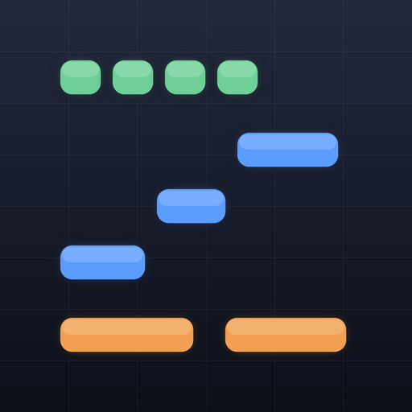

Pocketone
スマホで作る、ピアノロール作曲スケッチ
思いついた曲のアイデアを、スマートフォンやタブレットですばやく形にするための作曲スケッチ用アプリです。ピアノロールを中心に、五線譜やTAB譜でも同じ曲を見て、そのまま編集できます。出来上がったスケッチはMIDIファイルで書き出して、CubaseなどのDAWで本格的に仕上げられます。アカウント登録や通信は不要で、曲のデータは端末内に保存されます。
主な機能
- ピアノロールで入力・編集（4分〜32分、3連符、コピー、小節の複製・消去、元に戻す）
- 五線譜（ト音・ヘ音・大譜表）とTAB譜（ギター6・7弦、ベース4・5弦）の表示と編集
- ピアノ・ギター・ベース・ドラムの音で再生。ミュート、ソロ、トラックごとの音量
- テンポ、拍子（2/4〜12/8）、スウィング（8分／16分）
- 複数の曲を名前とタグで管理。MIDIの書き出しと、元に戻せるバックアップ
サポート
使い方、よくある質問、不具合報告や機能要望の窓口をご案内します。
サポートページへ
利用上の条件
バックアップと曲の権利に関する注意事項などをご確認ください。
利用上の条件